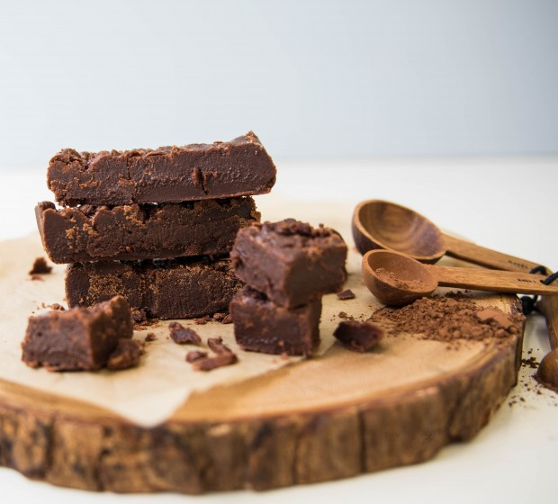

Chocolate Fudge

Sweet and creamy chocolate fudge
Ingredients
- 2 cups white sugar
- 2 Tbsp cocoa
- 25g butter
- 1/2 cup milk
- 1/2 tsp vanilla essence
Steps
- Lightly grease a 20cm square tin.
- Mix the sugar and cocoa in a saucepan and add the butter and milk.
- Heat gently, stirring constantly until the butter has melted and the sugar dissolved, about 10 minutes.
- Stop stirring, bring to the boil and simmer until the mixture reaches the soft ball stage (114˚C on a sugar thermometer).
- Immediately remove the pan from the heat, add the vanilla and let stand for 5 minutes.
- Beat with a wooden spoon until the fudge begins to thicken, then quickly pour into the tin and mark into squares. Cut when cold.